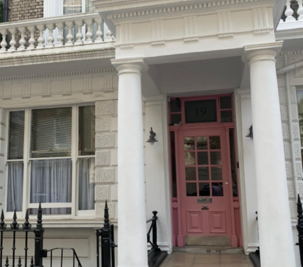
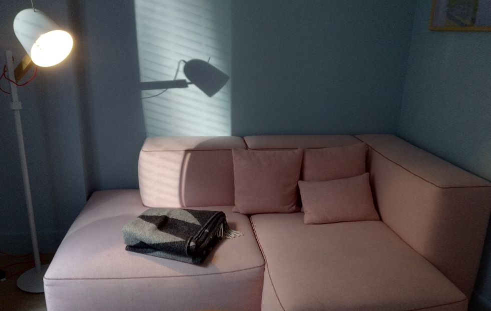
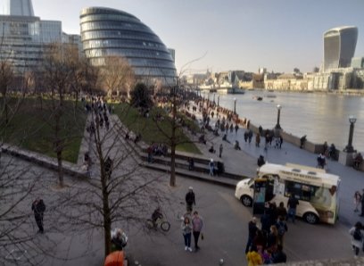
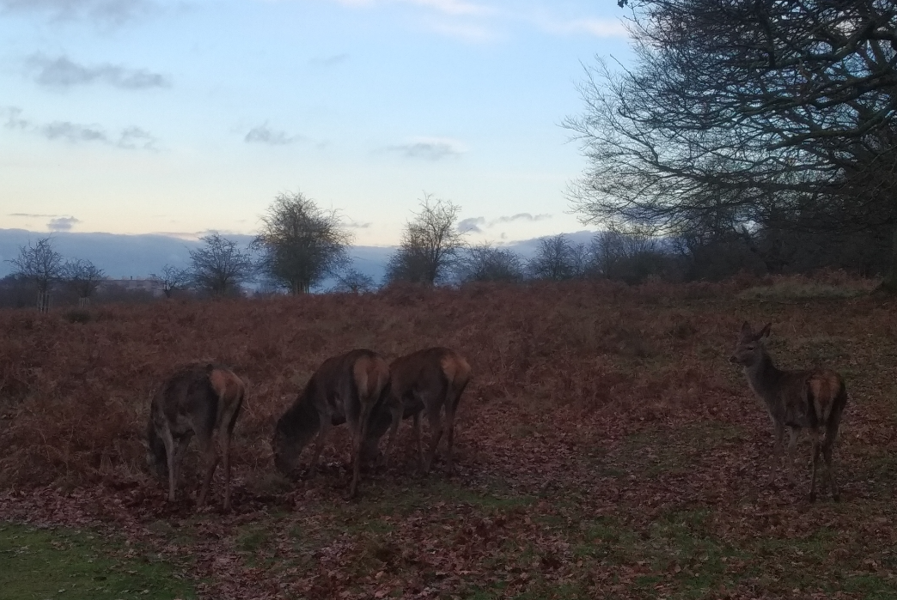

Nottinghill
I stayed at 186 holland avenue for almost half the time while I was in London. Nottinghill is a peaceful, flunent and safe neighborhood
decorated with lovely gardens and classic terraced houses.
Parks
I walk to the kensington gardens everyday to see the birds there. There are canada goose, swan, grey goose and egyptican goose that
inhabit the pond in harmony. I felt most connected with an egyptican goose who grown up alone with out any sibings and named her "littleone".
Westfield
186 Holland park sits on the boundary between the elegant kensington and the vibrant shepherd's bush. I enjoy crossing the boundary and went to
the westfield mall just across the street and buy myself a cup of T4 bubble tea. I also venture into the shepherd's bush community to look
for local products during the weekends.

Aldgate
I moved to East london - Aldgate during transition period between my contracts in a designer hotel called Leman Locke.
East and central London
Benefit by its close distance to the city of london, East london is full of skyscappers that light up the city at nights. The area is recently
refurbished and refreshing with a hybird of different cultures. It is not very safe to walk around at night time though during my stay.
I hope the security has improved over the years.
The hotel
I love the interior design of all Locke hotels and the unique products they supplied to each guests. However, since it is an apartel, it doesnt
have any housekeeping service. The natural light is not very sufficient if you plan to work or stay in the rooms.

Bermondsay and Southwark
My favourite spot in London. Very well connectby DLR and give me the opportunity to explore the amazing docklands
Bermondsey
Bermondsey is a diversed yet safe community and home to many craft beer stores and designer vibe shops that brings you daily inspirations.
Southbank
I walk down the southbank to go back to the Kensington garden whenever I have time and enjoyed counting the bridges across the river.
Docklands
Limehouse, Canary wharf, Cananda waters, Beckton shopping park... Weekly adventure to the docklands is my all time favourite activity in
London.

This page is only an abstract of my experience in London. I also stayed in bayswater, south kensington, westminister, richmond and camden : )
